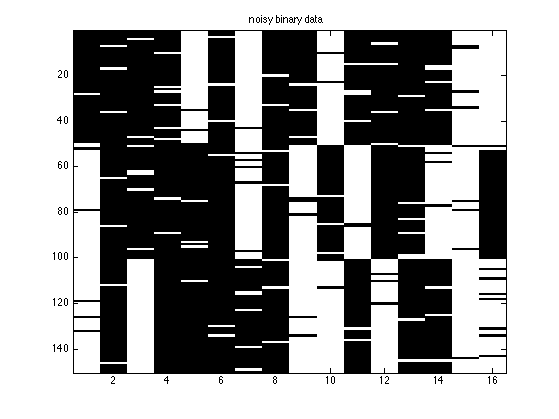
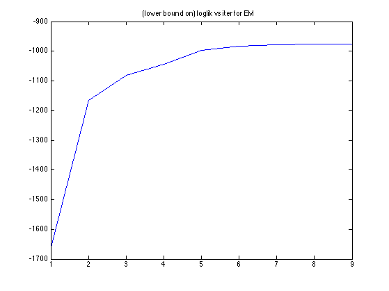
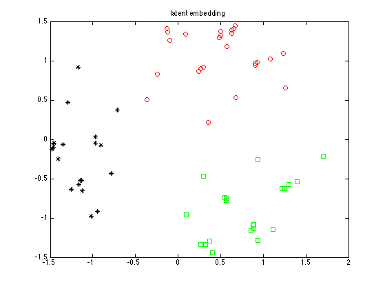
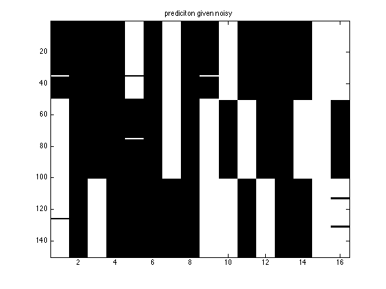
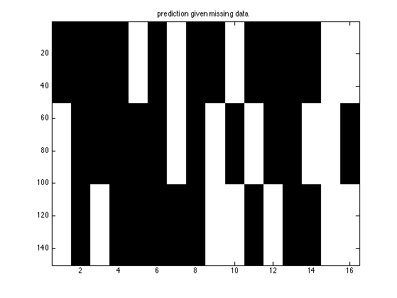

setSeed(0);
D = 16;
K = 3;
proto = rand(D,K) < 0.5;
M = 50;
source = [1*ones(1,M) 2*ones(1,M) 3*ones(1,M)];
N = numel(source);
dataClean = zeros(N, D);
for n=1:N
src = source(n);
dataClean(n, :) = proto(:, src)';
end
noiseLevel = 0.05;
flipMask = rand(N,D) < noiseLevel;
dataNoisy = dataClean;
dataNoisy(flipMask) = 1-dataClean(flipMask);
dataMissing = dataClean;
dataMissing(flipMask) = nan;
figure; imagesc(dataNoisy); colormap(gray);
title('noisy binary data')
printPmtkFigure('binaryPCAinput');
figure; imagesc(dataClean); colormap(gray); title('hidden truth')
[model, loglikHist] = binaryFAfit(dataNoisy, 2, 'maxIter', 10, 'verbose', true);
figure; plot(loglikHist); title('(lower bound on) loglik vs iter for EM')
muPost = binaryFAinferLatent(model, dataNoisy);
figure;
symbols = {'ro', 'gs', 'k*'};
for k=1:K
ndx = (source==k);
plot(muPost(1,ndx), muPost(2,ndx), symbols{k});
hold on
end
title('latent embedding')
printPmtkFigure('binaryPCAoutput')
[postPred] = binaryFApredictMissing(model, dataNoisy);
yhat = postPred > 0.5;
figure; imagesc(yhat); colormap(gray); title('prediciton given noisy')
[postPred] = binaryFApredictMissing(model, dataMissing);
yhat = postPred > 0.5;
figure; imagesc(yhat); colormap(gray); title('prediction given missing data')
initializing model for EM
1 loglik: -1664.16
2 loglik: -1165.29
3 loglik: -1081.42
4 loglik: -1044.31
5 loglik: -998.017
6 loglik: -982.259
7 loglik: -978.028
8 loglik: -976.969
9 loglik: -976.942
    